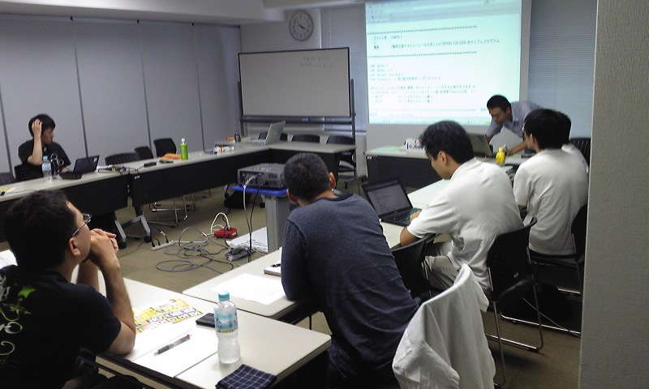
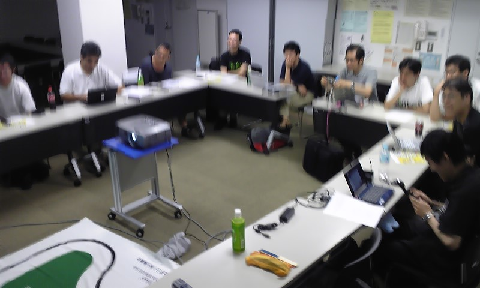

第1回 - オープンラボ岡山
- 修了しました。
?収支報告
参加者 15名
[収入]
参加費 7500
-------------------------
収入合計：7500
[支出]
会議室 2600
プロジェクタ 700
-------------------------
支出合計：3300
---------------------------------------
収入合計ー支出合計：4200
?開催風景


?開催日時
2009年7月18日（土）13:00-18:00
?会場
きらめきプラザ（２階の「ゆうあいセンター」大会議室２）
http://www.kirameki-plz.com/gaiyou.html
?参加費
500円
参加者は運営委員を含めて参加費を負担していただきます。また(基本的には) 当日の講師/発表者も参加費を負担します。参加費は、会場にかかる費用等で 変動することがありますが、500円程度を目安にご負担いただいております。 この参加費は、当日必要な経費（会場・プロジェクタ代）などに活用します。 余剰金がでた場合には、次回開催時の費用に当てます。
?参加登録
Mixi、Yahoo! JAPAN、はてな などのIDを持たれている方。
IDを持たれていない方は、下記のアドレスにて参加を表明してください。
- openlab.okayama@gmail.com
?内容
開始時刻は目安です。前後する可能性がありますので、途中から参加される方は余裕を持ってご来場ください。
- 13:00頃～1時間程度 Linux詳説：概要（第1回）
- 講師：ひら
- 概要：
- Linuxカーネルの概要を説明します。次回以降、内部の詳細な解説に入ります。
- Linuxカーネル内部解説本を読みたい人、挫折した人をサポートします(^-^)b
- 14:00頃～1時間程度 Androidの話
- 講師：花田
- 概要
- Androidの会の岡山支部でやりたいことを話し合いませんか？
- GoogleDeveloperDay2009で配布されたGDDフォンにさわってみよう
- 詳細
- 15:00頃～20分程度 ETロボコンへの挑戦
- 講師：三輪
- 概要
- ETロボコンとは
- ETロボコンのデモ
- おまけ こんなもの作ってしまいました。(for GMC-4)
- 15:30頃～30分程度 SICP入門
- 講師：白石
- 概要
- SICP(計算機プログラムの構造と解釈)を読む前に知っておくと分かりやすいかも知れない数値計算の話題，SICPの1章を読むと分かるであろうLisp(Scheme)の使い方を説明する予定です．資料です．http://docs.google.com/present/embed?id=df24rfm9_40c7knkwfd&size=l
- 16:00頃～30分程度 セキュリティ（仮）
- 講師：大垣
- 概要
- Perlプログラミングに於けるセキュリティについて
- 16:30頃～30分程度 その他
- 講師：運営委員
- 概要：今度の運営などについて
- 17:00頃～残り時間 ガウディ本読書会
- 講師：岡山読み会
- 概要：「コンピュータプログラミングの概念・技法・モデル」という本を読みます
- 17:00頃～残り時間 インサイドWindows読書会
- 講師：ひら
- 概要：マイクロソフト公式解説書である「インサイドWindows第4版」を読みます
告知文
メール送信用の告知文です。自由に転送ください。
オープンラボ岡山 オープンラボ岡山とは、岡山周辺の技術者のための勉強会プラットフォームとして、 勉強会や読書会の場を提供するための組織です。勉強会や読書会を開催したい方、 参加したい方が簡単に集まることの出来る場にしたいと考えています。運営委員は 全員ボランティアで、それぞれが勉強会や読書会の主催者でもあります。興味のあ る方は是非とも一緒にやりましょう。 ■名称： オープンラボ岡山 ■参加費： 500円 ■開催日時： 2009年7月18日 13:00から18:00 ■開催場所： きらめきプラザ（２階の「ゆうあいセンター」大会議室２） http://www.kirameki-plz.com/gaiyou.html ■主催: オープンラボ岡山 実行委員会 ■共催： 岡山Javaユーザ会 http://java.okaya.ma/ 瀬戸内Linuxユーザ会（STLUG） http://www.stlug.org/ LinuxKernelHackJAPAN http://hira-consulting.com/wiki オープンセミナー＠岡山実行委員会 http://openseminar.okaya.ma/ ■後援： 岡山リサーチパークインキュベーションセンター（通称：ＯＲＩＣ） ■懇親会： 岡山駅近辺で考えています。 ---------------------------------------------------------------------- ■13:00頃～1時間程度 Linux詳説：概要（第1回） 講師：ひら 概要：Linuxカーネルの概要を説明します。次回以降、内部の詳細な解説に入ります。 Linuxカーネル内部解説本を読みたい人、挫折した人をサポートします(^-^)b ■14:00頃～1時間程度 Androidの話 講師：花田 概要：Androidの会の岡山支部でやりたいことを話し合いませんか？ GoogleDeveloper Day2009で配布されたGDDフォンにさわってみよう ■15:00頃～20分程度 ETロボコンへの挑戦(20分程度) 講師：三輪 概要： ETロボコンとは ETロボコンのデモおまけ こんなもの作ってしまいました。 (for GMC-4) ■15:30頃～30分程度 SICP入門(30分程度) 講師：白石 概要：SICP(計算機プログラムの構造と解釈)を読む前に知っておくと分かりやすい かも知れない数値計算の話題，SICPの1章を読むと分かるであろうLisp(Scheme)の 使い方を説明する予定です． ■16:00頃～30分程度 セキュアWebプログラミング with Perl(30分程度) 講師：大垣 概要： Perlを使用したWebサイト構築のセキュリティ上の課題を 紹介します。 ■16:30頃～30分程度 その他(30分程度) 講師：運営委員 概要：今度の運営などについて ■17:00頃～残り時間 読書会 ●ガウディ本読書会（残り時間） 講師：岡山読み会 概要：「コンピュータプログラミングの概念・技法・モデル」という本を読みます ●インサイドWindows読書会（残り時間） 講師：ひら 概要：マイクロソフト公式解説書である「インサイドWindows第4版」を読みます ■講師陣のプロフィール等は公式サイト（http://openlab.okaya.ma/）をご覧ください。 ---------------------------------------------------------------------- ■参加申し込み方法 Mixi、Yahoo! JAPAN、はてな などのIDを持たれている方 http://atnd.org/events/1036 IDを持たれていない方は、下記のアドレスにて参加を表明してください。 openlab.okayama@gmail.com
Copyright(C)2009 オープンラボ岡山運営委員会 All rights reserved.